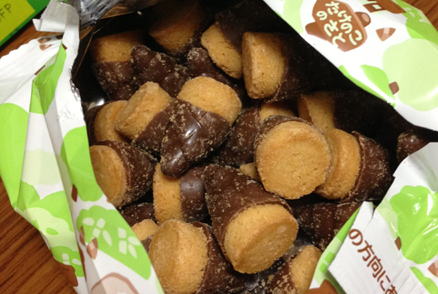
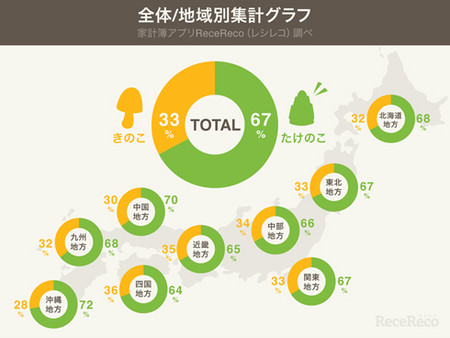

 
たけのこの里
たけのこの里（たけのこのさと）は、株式会社明治が製造・販売しているチョコレートスナック菓子。期間限定商品も発売される。1979年（昭和54年）より当時の明治製菓から発売された。
きのこの山の姉妹品だが、
売り上げはたけのこの里の方が多いとのこと
特徴
中身はクッキー。外側にチョコレートのコーティングがかかっており、このチョコレートはミルクチョコレートとビターチョコレートの二層になっている。きのこの山と比べ、内容量は若干少ない。 きのこの山に比べ、一粒のチョコレートの量は若干少ない。